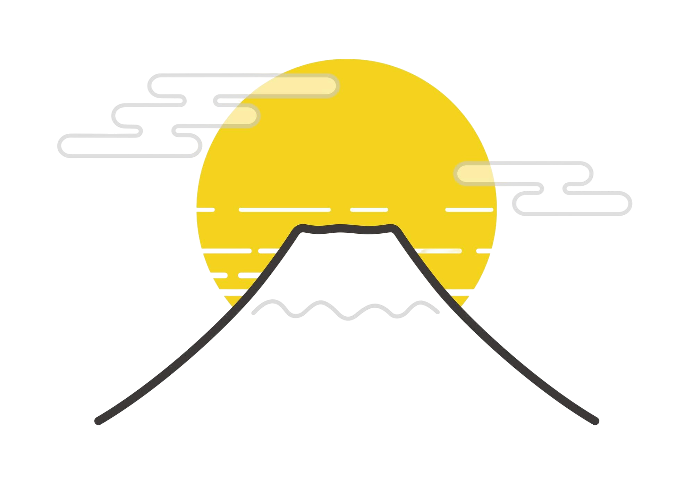
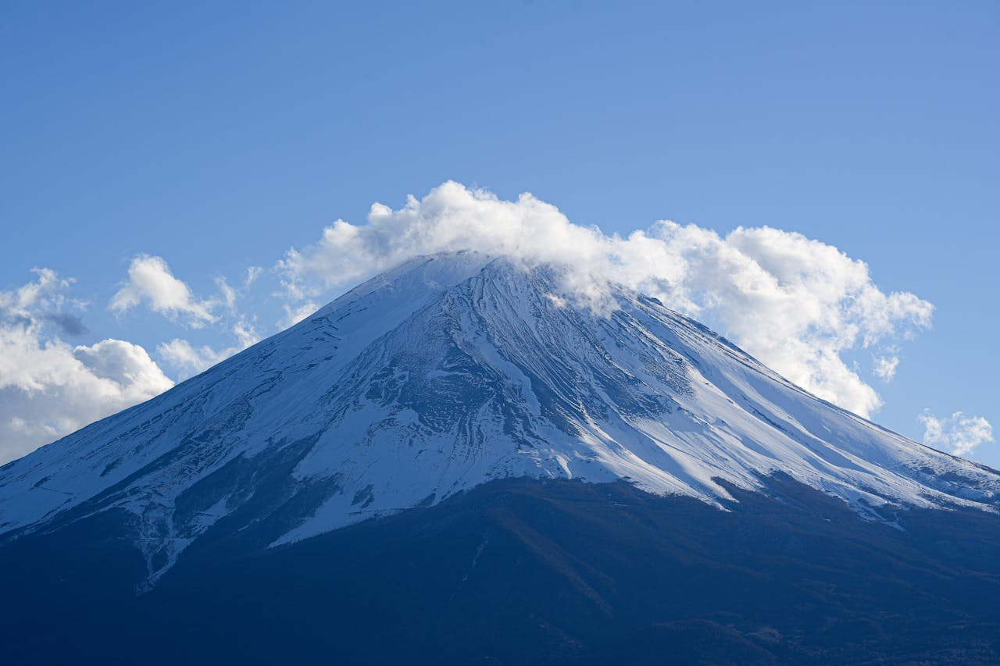
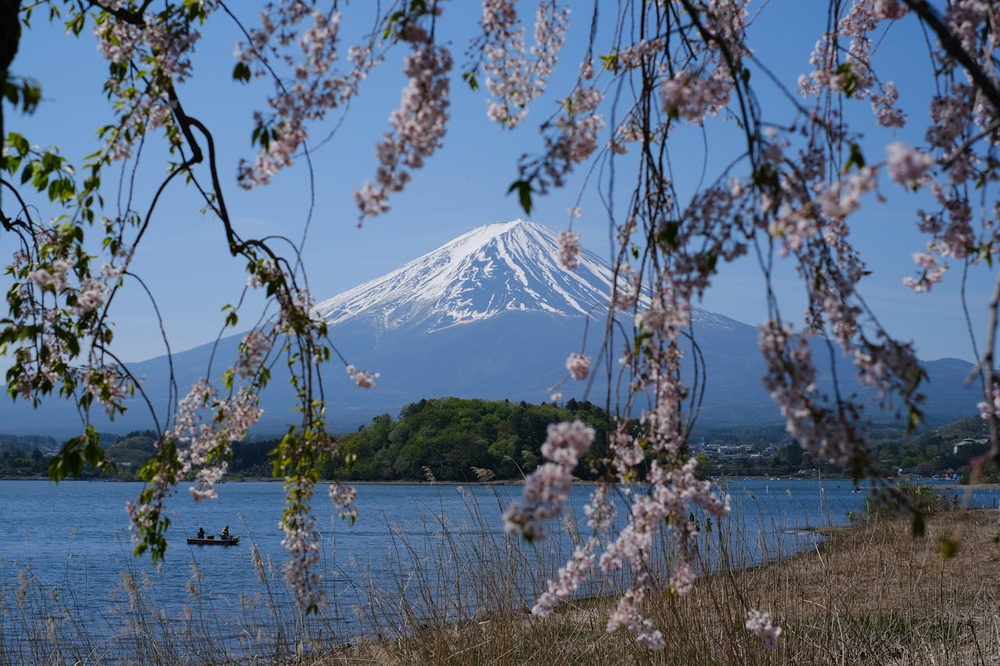
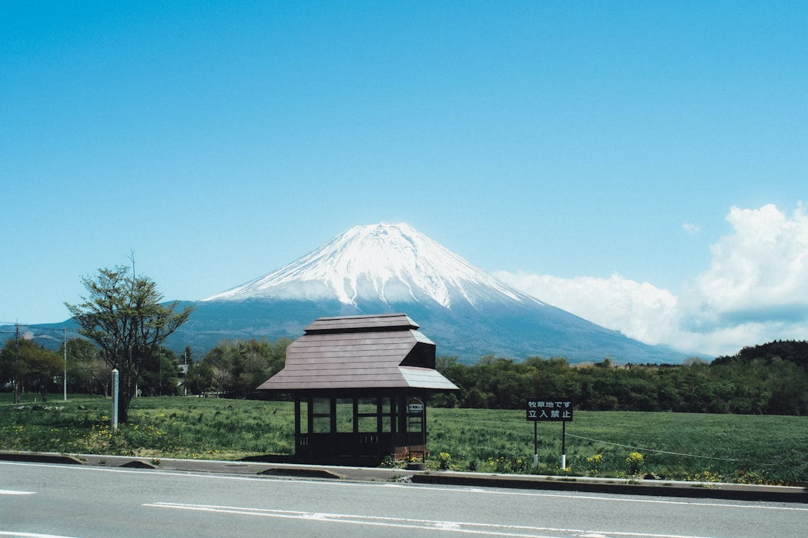
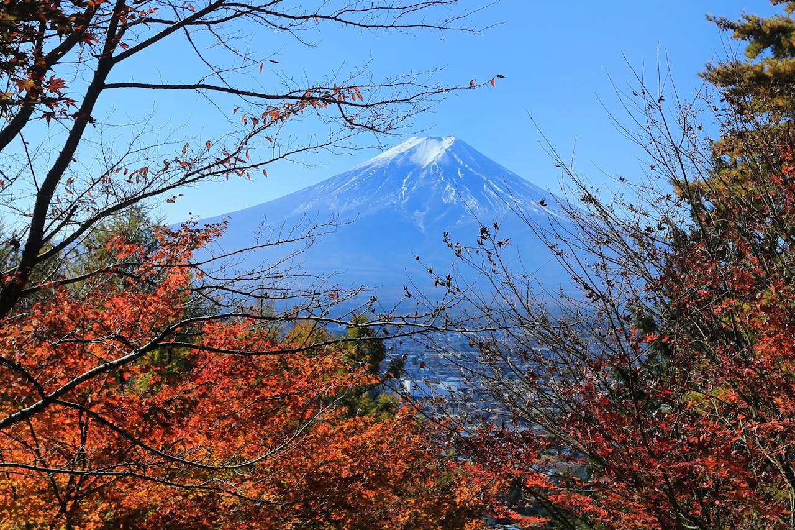
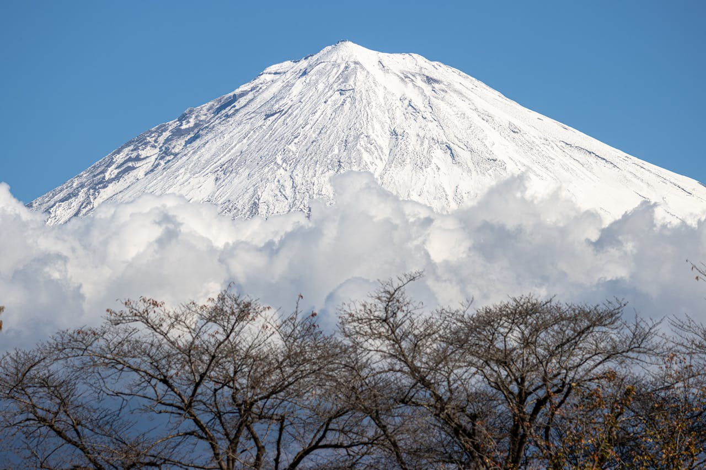

富士山はすごい！🗻
Mount Fuji (meters/12,388 feet) is Japan's highest peak, an active stratovolcano located on Honshu island, about 100km southwest of Tokyo.
Take a Tour!
Fuji-san in Different Seasons

Spring at Mount Fuji bursts with delicate cherry blossoms, framing the snow-capped peak in soft pink hues.

Summer on Mount Fuji invites adventurers to climb under clear skies, with trails alive from July to September.

Autumn transforms Mount Fuji's surroundings into a tapestry of crimson, amber, and gold.

Winter drapes Mount Fuji in pristine snow, accentuating its perfect cone against brilliant blue skies.